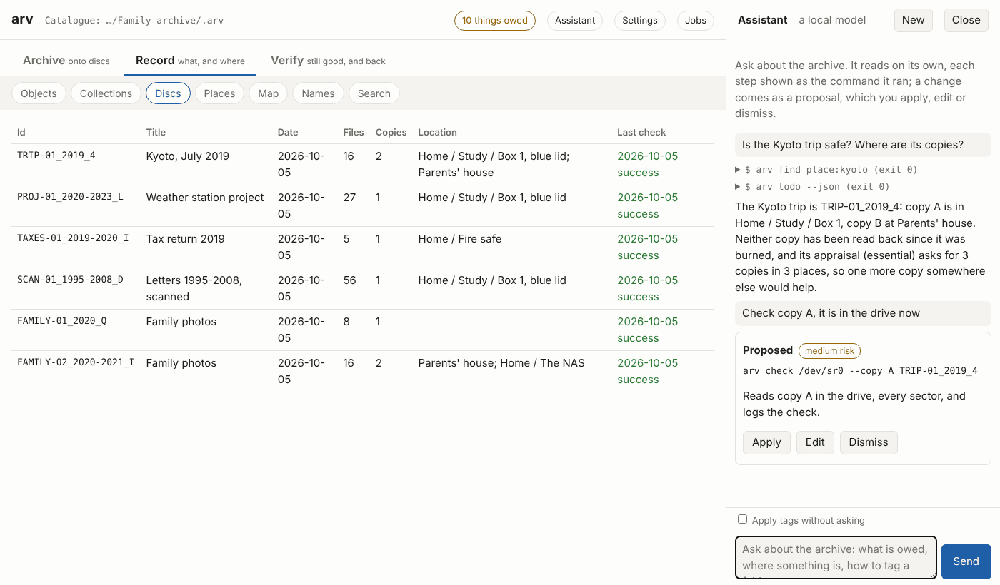
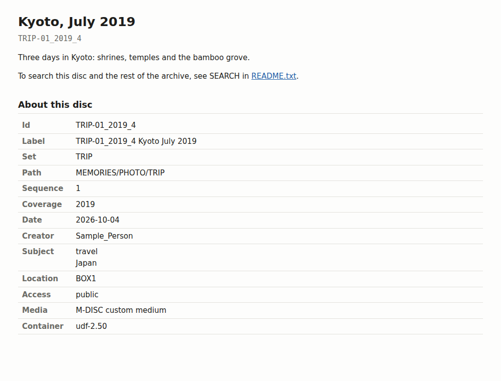

Archive, Record, Verify. For the photos, letters, videos and work you want your family to still have in fifty years: it helps you choose them, keeps track of every copy, and writes discs that explain themselves.
Experimental. No disc made with it has yet been read back after years on a shelf, and the disc format is a draft that may still change. Treat anything you make with it as an extra copy while you try it.
Written largely by an AI coding assistant, with a human choosing the direction and reviewing the results. It has tests, but expect bugs. That's why we'd like your feedback.

arv gui on the sample archive, with the Assistant open. Its look-ups are
real; the model's replies are scripted for this picture.What it's for
A backup and an archive are different jobs. A backup copies everything as it is now, so you can get back what you lost last week, and next week's backup replaces it. An archive holds what is worth keeping, chosen and described, and has to outlive the computer, the software and perhaps the person who made it. It is best kept cold: on discs on a shelf, where no mistake, failure or ransomware on a connected computer can reach it.
Keep your backups. arv is for the archive on top of them.
What it does for you
Choose what to keep. Point it at a folder you keep sorting, and each time you archive it, it says what changed since the last time. Or put together a disc by hand from files anywhere, the way old burning programs did.
Know where everything is. Search the whole archive without a disc in the drive: which disc holds the Kyoto photos, where each copy is kept (a box in the study, your parents' house), and when it was last checked. It tells you what is owed: a copy to make, one to check, a second place to keep one.
Describe it, so it can be found later. Tags, the people and places in it, a map of where things were taken. It can ask you a few questions to fill them in, read dates and places from your photos, or use an AI model on your computer to suggest them. The Assistant answers questions about the archive and suggests changes; nothing changes until you say so.
Discs that explain themselves. Each disc opens on any computer as plain files, with a page describing what is on it and a catalogue of the whole archive so far. It can check itself and repair damage, and carries the program that made it, so it never depends on this website, or on arv still being around.
Your data stays yours
- Your files are never changed, moved or deleted. arv copies them onto discs as they are and keeps its records beside them. It never deletes anything, its own records included: a change is added, never written over.
- No account, no cloud, no lock-in. It runs on your computer. Everything it writes is plain text in open formats that other programs can read.
- AI is optional, and local by default. Describing works without any model. A model on your computer is used if you have one; an online one only if you turn it on, and then every use says so. Pictures never leave your computer.
See it
A typical session at the command line, run for real (about a minute and a half): a disc put together from a
video and a camera card, its copies recorded on the shelf and the NAS, then checked.
The recording is plain text; asciinema play docs/demo/arv.cast
plays it in a terminal.
Try it
You need Linux, git and a C compiler. Nothing is installed and nothing is burned
in the first two steps.
1. Look around the sample archive: six small sample discs and their catalogue.
git clone https://github.com/mofosyne/arv
cd arv
make # builds arv (C, no libraries)
./arv --home samples/home gui # the sample archive, in your web browser
./arv --home samples/home find kyoto # or at the command line: which disc holds itThe sample disc images are a download (samples/fetch-discs.sh, or the
samples release): open one in your
file manager and read its README.txt, or its index.html:

2. Make a test image of a small folder, in an archive of its own so it stays apart
from anything real (--no-ecc skips the error correction, quicker for a trial).
./arv --home /tmp/arv-try make ~/some/small/folder --no-ecc --output-dir /tmp
./arv --home /tmp/arv-try gui3. When you want real discs: install it, and follow the workflow guide, from a folder to discs on a shelf, and back.
make install PREFIX=~/.local
cd /path/above/your/files && arv init --name home --default
arv guiDebian, Ubuntu and Arch packages can be built too (packaging).
In the interface, Settings › Programs says which optional programs would help, and how to install
them. To remove arv: make uninstall PREFIX=~/.local; your archives and discs stay as
they are.
Tell us how it went
Feedback of any size helps: a step that confused you, something that broke, a disc that would not read back, or a reason you would not trust it with your files. For questions and talk, there is a Telegram group.
Read more
- Workflow: from a folder to discs on a shelf, and back
- Philosophy: why it works this way
- Concepts: collections, copies, and the words arv uses
- README: install, and every command
- For archivists and the technically curious: how a disc is built (its layers, error correction and repair), copies, places and checks (copy letters, barcodes and disc serials, two computers, tape libraries), and the disc format, for reading or writing these discs with other tools.